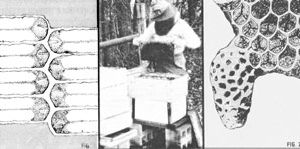

An amateur apiarist can revitalize queenless colonies, or successfully divide strong ones, if the beekeeper understands . . .
I used to depend on two beehives to provide me with about 100 pounds of fresh honey each year . . . but-upon inspecting my tiny apiary after a recent, unusually severe Ohio winter-I discovered that the cold weather had entirely wiped out one of my colonies! I knew that once spring came I could restock my empty hive with a mail-ordered beesand-queen package. But I decided, instead, to use the hive community I had left to establish a new colony . . . complete with its own queen!
My procedure wasn't terribly complicated, either. It should be well within the abilities of any backyard beekeeper. And the "queen making" skill can be an important one for any apiarist to master.
Before I could use the "trick", however, I wanted to make sure my remaining colony was at its peak strength. So I waited until May . . . when the bee population had "blossomed" along with the spring flowers. I then opened the hive, examined the insects' brood box, and located the queen. I let her crawl between my thumb and forefinger, gently grasped her thorax, or midsection-being careful not to clasp the abdomen, or tail section, where she makes her eggsand clipped off a piece of one of her wings using cuticle scissors. (I knew I didn't need to worry about stings during this operation, because queen bees al most never "attack".)
I then gently transferred the "ground ed" insect to my empty hive, along with two frames containing ready-to-hatch brood cells plus one frame laden with honey and another containing pollen. The four racks provided food stores and, most importantly, a source of soon-to-emerge young workers (known as nurse bees) that would tend to all the queen's needs.
Once the colony-starting elements were in place, I closed up my "reborn" hive and blocked off most of its entryway . . . so the temporarily short-handed residents could defend their supplies from any invading "robber" bees. (I removed the entrance reducer two weeks later.)
So far, so good . . . but how, you may ask, did the strong hive find itself a new queen? The answer is simple: The bees made themselves one. Worker bees and queen bees, you see, come from the same type of eggs! (A worker is a sexually undeveloped female, while the prolific queen-an Insect that can lay up to 1,500 eggs a day during the height of the summer season-is a fully matured reproducer.) The "secret ingredient" that makes one female egg develop into a lowly laborer and another into the hive's highness is a beemade food called royal jelly.
Scientists don't understand how the "magic" substance works, or even exactly what all it contains-oh, the unsolved marvels of apiculture!-but they do know that queen bees are raised entirely on royal jelly, while workers-to-be are fed the mysterious food for only the first three days of their lives.
I had already spotted the tiny, white, uncurled "specks" of one- to three-dayold larvae (see Fig. 1) in the original hive, so I knew the colony contained some royal-jelly-fed youngsters that had the potential to become queens. To pro vide a further stimulus, I created an artificial honey flow by filling three quart jars with a 1/4-to-3/4 sugarand-water mix, poking small holes in the containers' lids, and inverting these feeders in the space left by the hive's four missing frames. I then reassembled the hive.
Within ten days, the bees had created eight queen cells (Fig. 2). I took out a frame containing one of the peanutshaped holders, and another with two queen cells, and used these-along with some brood-in order to start two more small colonies.
That left me with five queen cells in the original hive. The first insect to hatch out would destroy her unborn sisters. If more than one emerged simultaneously, the throneseekers would fight until only the strongest bee survived to become the new queen.
The addition of a frame containing one- to three-day-old larvae can help renew a hive that for any reason has lost its queen. In my case, using this technique to increase my apiary meant that I once again had two strong colonies . . . in addition to a pair of up-and-coming new hives. Best of all, that summer I was able to, once more, harvest a 100-pound honey crop!
EDITOR'S NOTE: MOTHER NO. 67 carried an introductory article on apiculture, "Beekeeping Basics". See page 116 for information on how to order back issues.
|
 |
|
|